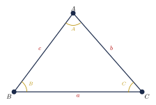
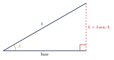

Capítulo 26
Ley de senos y ley de cosenos
UNAM IPN
Las razones trigonométricas permiten resolver triángulos rectángulos. Sin embargo, muchos problemas geométricos producen triángulos que no contienen un ángulo recto. Estos triángulos reciben el nombre de triángulos oblicuángulos.
Para resolverlos se utilizan principalmente la ley de senos y la ley de cosenos. La elección depende de los lados y ángulos conocidos. En este capítulo aprenderás a identificar la ley adecuada, resolver triángulos y analizar el caso ambiguo que puede presentarse al usar la ley de senos.
26.1 Triángulos oblicuángulos#
Un triángulo oblicuángulo es un triángulo que no contiene ningún ángulo recto.
Un triángulo oblicuángulo puede ser:
- acutángulo, si sus tres ángulos son menores que \(90^\circ\);
- obtusángulo, si uno de sus ángulos es mayor que \(90^\circ\).
Un triángulo no puede tener más de un ángulo obtuso, pues la suma de sus ángulos interiores es:
26.2 Notación de los elementos de un triángulo#
En un triángulo \(\triangle ABC\) se utiliza la siguiente convención:
- los vértices se nombran: \[A,\qquad B,\qquad C;\]
- las medidas de los ángulos interiores se representan mediante: \[A,\qquad B,\qquad C;\]
- el lado opuesto al ángulo \(A\) se representa mediante \(a\);
- el lado opuesto al ángulo \(B\) se representa mediante \(b\);
- el lado opuesto al ángulo \(C\) se representa mediante \(c\).
La correspondencia entre los ángulos y sus lados opuestos puede observarse en la siguiente figura:

La correspondencia entre un lado y su ángulo opuesto debe conservarse en todas las fórmulas:
En la ley de senos no debe emparejarse un lado con un ángulo que no sea su opuesto.
En todo triángulo se cumple:
Por tanto, si se conocen dos ángulos, el tercero puede calcularse mediante:
26.3 Resolver un triángulo#
Resolver un triángulo significa determinar:
- las longitudes de sus tres lados;
- las medidas de sus tres ángulos interiores.
Un triángulo queda determinado de manera única por algunos conjuntos de datos, como:
- dos ángulos y un lado;
- dos lados y el ángulo comprendido;
- sus tres lados.
En cambio, conocer dos lados y un ángulo no comprendido puede producir cero, uno o dos triángulos. Esta situación se denomina caso ambiguo.
26.4 Ley de senos#
En todo triángulo, las longitudes de los lados son proporcionales a los senos de sus ángulos opuestos:
También puede escribirse en forma recíproca:
Si \(R\) es el radio de la circunferencia circunscrita al triángulo, entonces:
Cada fracción de la ley de senos debe contener un lado y el seno de su ángulo opuesto:
26.5 Cuándo utilizar la ley de senos#
La ley de senos es especialmente útil cuando se conocen:
- dos ángulos y cualquier lado, caso AAL o ALA;
- dos lados y un ángulo opuesto a uno de ellos, caso LLA.
Si se conocen dos ángulos, el tercer ángulo se obtiene primero mediante:
Después puede utilizarse la ley de senos para calcular los lados desconocidos.
En un triángulo se conocen:
Encuentra el lado \(b\).
Ver solución
Emparejamos cada lado con su ángulo opuesto:
Sustituimos los datos:
Despejamos \(b\):
Por tanto:
Aproximadamente:
En un triángulo se conocen:
Encuentra el lado \(c\).
Ver solución
Aplicamos la ley de senos:
Sustituimos:
Despejamos:
Utilizando:
se obtiene:
Por tanto:
En un triángulo se conocen:
Encuentra el ángulo \(B\).
Ver solución
Aplicamos la ley de senos:
Sustituimos:
Despejamos \(\sen B\):
Calculamos la primera posibilidad:
Como:
la segunda posibilidad sería:
Sin embargo:
Por tanto, \(B_2\) no puede ser un ángulo del triángulo.
La única solución es:
26.6 Caso ambiguo de la ley de senos#
Cuando se conocen dos lados y un ángulo no comprendido, caso LLA, la ley de senos puede producir:
- ningún triángulo;
- un solo triángulo;
- dos triángulos distintos.
Esto ocurre porque:
Supongamos que se conocen el ángulo agudo \(A\), el lado opuesto \(a\) y otro lado \(b\). Definimos la altura:
Entonces:
- si \[a<h,\] no existe ningún triángulo;
- si \[a=h,\] existe un triángulo rectángulo;
- si \[h<a<b,\] existen dos triángulos;
- si \[a\geq b,\] existe un solo triángulo.
Las posibilidades pueden visualizarse comparando el lado \(a\) con la altura \(h\) y el lado \(b\):

En un triángulo se conocen:
Determina las posibles medidas del ángulo \(B\).
Ver solución
Aplicamos la ley de senos:
Sustituimos:
Despejamos:
La primera posibilidad es:
La segunda posibilidad es:
Comprobamos ambas sumas:
y:
Ambas posibilidades son válidas. Por tanto:
o:
Los datos determinan dos triángulos distintos.
La calculadora devuelve normalmente solo el valor principal de \(\arcsen\). Al resolver un caso LLA, siempre debe analizarse también:
La segunda posibilidad se acepta únicamente si la suma de los ángulos permanece menor que \(180^\circ\).
26.7 Ley de cosenos#
En todo triángulo se cumplen las siguientes relaciones:
En cada fórmula:
- el lado aislado en el primer miembro es opuesto al ángulo del coseno;
- los otros dos lados forman el ángulo utilizado.
Por ejemplo, en:
el lado \(a\) es opuesto al ángulo \(A\), mientras que los lados \(b\) y \(c\) forman dicho ángulo.
26.8 Cuándo utilizar la ley de cosenos#
La ley de cosenos es especialmente útil cuando se conocen:
- dos lados y el ángulo comprendido entre ellos, caso LAL;
- los tres lados del triángulo, caso LLL.
La ley de cosenos no presenta el caso ambiguo de la ley de senos.
Los datos LAL y LLL, siempre que satisfagan las condiciones geométricas necesarias, determinan un único triángulo.
26.9 Cálculo de un lado mediante la ley de cosenos#
En un triángulo se conocen:
Encuentra el lado \(a\).
Ver solución
El lado \(a\) es opuesto al ángulo \(A\). Aplicamos:
Sustituimos:
Como \(a\) es una longitud:
Por tanto:
Aproximadamente:
En un triángulo se conocen:
Encuentra el lado \(c\).
Ver solución
El lado \(c\) es opuesto al ángulo \(C\). Utilizamos:
Sustituimos:
Por tanto:
Aproximadamente:
26.10 Cálculo de un ángulo mediante la ley de cosenos#
Los ángulos pueden determinarse mediante:
Por tanto:
y de manera análoga para \(B\) y \(C\).
En un triángulo se conocen:
Encuentra el ángulo \(C\).
Ver solución
El ángulo \(C\) es opuesto al lado \(c\). Aplicamos:
Sustituimos:
Aplicamos la función inversa:
Por tanto:
26.11 Relación con el teorema de Pitágoras#
La ley de cosenos generaliza el teorema de Pitágoras.
Si:
entonces:
Por tanto:
Esta es precisamente la relación del teorema de Pitágoras.
26.12 Clasificación de un triángulo mediante sus lados#
Sea \(c\) el lado de mayor longitud de un triángulo.
- Si: \[c^2<a^2+b^2,\] el triángulo es acutángulo.
- Si: \[c^2=a^2+b^2,\] el triángulo es rectángulo.
- Si: \[c^2>a^2+b^2,\] el triángulo es obtusángulo.
Clasifica según sus ángulos un triángulo cuyos lados miden:
Ver solución
El lado mayor es:
Comparamos:
con:
Como:
el triángulo es obtusángulo.
26.13 Área con dos lados y el ángulo comprendido#
El área de un triángulo puede calcularse si se conocen dos lados y el ángulo comprendido entre ellos:
De manera equivalente:
o:
Se utiliza la letra \(K\) para representar el área y evitar confundirla con el ángulo \(A\).
Encuentra el área de un triángulo si:
Ver solución
Los lados \(b\) y \(c\) forman el ángulo \(A\). Aplicamos:
Sustituimos:
Por tanto:
26.14 Elección de la ley adecuada#
Para seleccionar el procedimiento adecuado, identifica los datos conocidos:
- Si se conocen dos ángulos y un lado, utiliza la ley de senos.
- Si se conocen dos lados y un ángulo opuesto a uno de ellos, utiliza la ley de senos y analiza el caso ambiguo.
- Si se conocen dos lados y el ángulo comprendido, utiliza la ley de cosenos.
- Si se conocen los tres lados, utiliza la ley de cosenos para encontrar primero un ángulo.
- Si el triángulo es rectángulo, pueden utilizarse directamente el teorema de Pitágoras y las razones trigonométricas.
Antes de sustituir en una fórmula, conviene dibujar un esquema y verificar la correspondencia:
Una correspondencia incorrecta entre lados y ángulos produce una ecuación equivocada, aunque las operaciones posteriores estén bien realizadas.
26.15 Problemas de aplicación#
Dos embarcaciones salen de un mismo puerto. Una recorre \(15\ \text{km}\) y la otra \(20\ \text{km}\). Sus trayectorias forman un ángulo de \(70^\circ\). Encuentra la distancia entre las embarcaciones.
Ver solución
Las rutas recorridas forman dos lados de un triángulo y el ángulo entre ellas es el ángulo comprendido. Sea \(d\) la distancia entre las embarcaciones.
Aplicamos la ley de cosenos:
Entonces:
Por tanto:
Así:
Un topógrafo mide dos lados de un terreno triangular:
El ángulo comprendido entre ellos mide:
Encuentra la longitud del tercer lado.
Ver solución
Sea \(x\) la longitud desconocida. Aplicamos la ley de cosenos:
Calculamos:
Por tanto:
Así:
26.16 Ejercicios propuestos#
En un triángulo se conocen:
Encuentra el lado \(b\).
Ver solución
En un triángulo se conocen:
Encuentra el lado \(a\).
Ver solución
\(A + B + C = 180^\circ\), entonces \(B = 180^\circ - 35^\circ - 80^\circ = 65^\circ\). \[a = \frac{c \cdot \sen A}{\sen C} = \frac{15 \cdot \sen 35^\circ}{\sen 80^\circ} \approx \frac{15 \cdot 0.5736}{0.9848} \approx 8.74 \text{ cm}.\]
En un triángulo se conocen:
Encuentra todos los valores posibles del ángulo \(B\) y determina cuántos triángulos pueden construirse.
Ver solución
\[\sen B = \frac{b \cdot \sen A}{a} = \frac{14 \cdot \sen 30^\circ}{10} = \frac{14 \cdot 0.5}{10} = 0.7.\] \[B = \arcsen(0.7) \approx 44.4^\circ.\]
En un triángulo se conocen:
Encuentra el lado \(a\).
Ver solución
\[a^2 = 5^2 + 8^2 - 2(5)(8)\cos 60^\circ = 25 + 64 - 80 \cdot \frac{1}{2} = 89 - 40 = 49.\] \[a = 7 \text{ cm}.\]
En un triángulo se conocen:
Encuentra el lado \(c\).
Ver solución
\[c^2 = 9^2 + 12^2 - 2(9)(12)\cos 120^\circ = 81 + 144 - 216 \cdot \left(-\frac{1}{2}\right) = 225 + 108 = 333.\] \[c = \sqrt{333} \approx 18.25 \text{ cm}.\]
En un triángulo se conocen:
Encuentra el ángulo \(B\).
Ver solución
\[\cos B = \frac{a^2 + c^2 - b^2}{2ac} = \frac{25 + 81 - 49}{2(5)(9)} = \frac{57}{90} \approx 0.6333.\] \[B = \arccos(0.6333) \approx 50.7^\circ.\]
En un triángulo se conocen:
Encuentra el ángulo mayor.
Ver solución
El ángulo mayor es el opuesto al lado mayor, es decir, el opuesto a \(c = 12\). \[\cos C = \frac{a^2 + b^2 - c^2}{2ab} = \frac{36 + 100 - 144}{2(6)(10)} = \frac{-8}{120} \approx -0.0667.\] \[C = \arccos(-0.0667) \approx 93.8^\circ.\]
Dos embarcaciones salen del mismo puerto. Una recorre \(15\ \text{km}\) hacia el norte y la otra recorre \(20\ \text{km}\) en una dirección que forma un ángulo de \(70^\circ\) con la trayectoria de la primera. ¿Qué distancia separa las embarcaciones?
Ver solución
Los barcos y el puerto forman un triángulo con lados 15 km, 20 km y ángulo comprendido \(70^\circ\). \[d^2 = 15^2 + 20^2 - 2(15)(20)\cos 70^\circ = 225 + 400 - 600 \cdot 0.3420 \approx 625 - 205.2 = 419.8.\] \[d = \sqrt{419.8} \approx 20.49 \text{ km}.\]
Un topógrafo mide dos lados de un terreno triangular:
El ángulo comprendido entre ellos mide:
Encuentra la longitud del tercer lado.
Ver solución
\[c^2 = 40^2 + 55^2 - 2(40)(55)\cos 75^\circ = 1600 + 3025 - 4400 \cdot 0.2588 \approx 4625 - 1138.7 = 3486.3.\] \[c = \sqrt{3486.3} \approx 59.04 \text{ m}.\]
En un triángulo se conocen:
Encuentra el lado \(a\).
Ver solución
\(C = 180^\circ - 50^\circ - 60^\circ = 70^\circ\). \[a = \frac{c \cdot \sen A}{\sen C} = \frac{10 \cdot \sen 50^\circ}{\sen 70^\circ} \approx \frac{10 \cdot 0.7660}{0.9397} \approx 8.15 \text{ cm}.\]